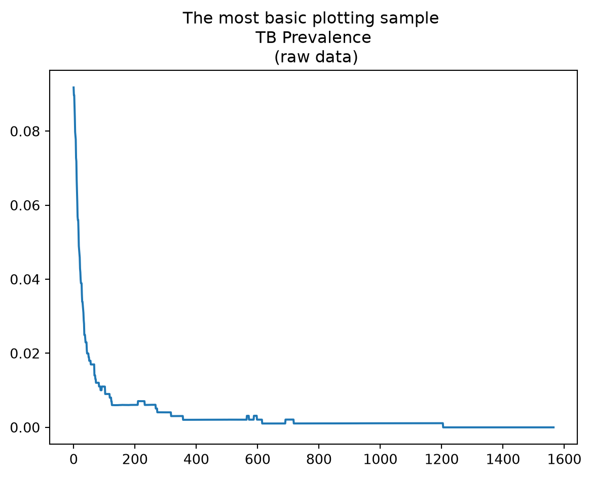
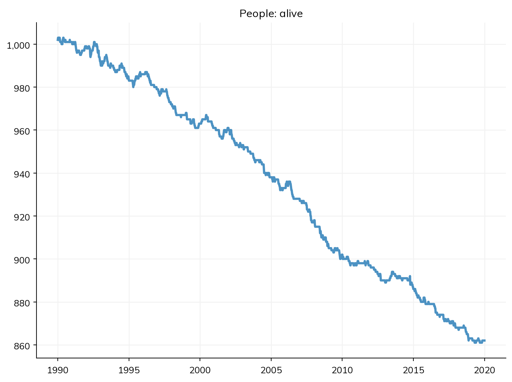
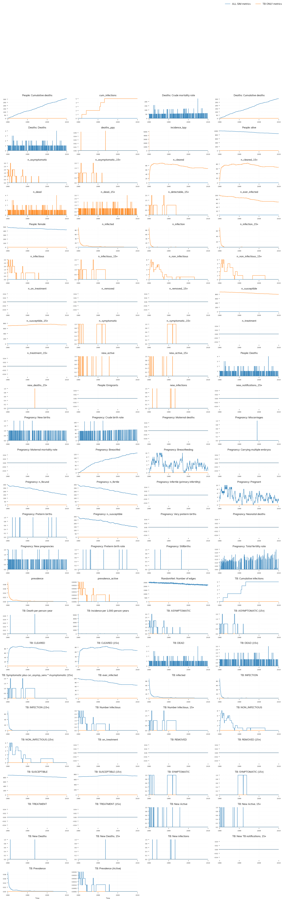
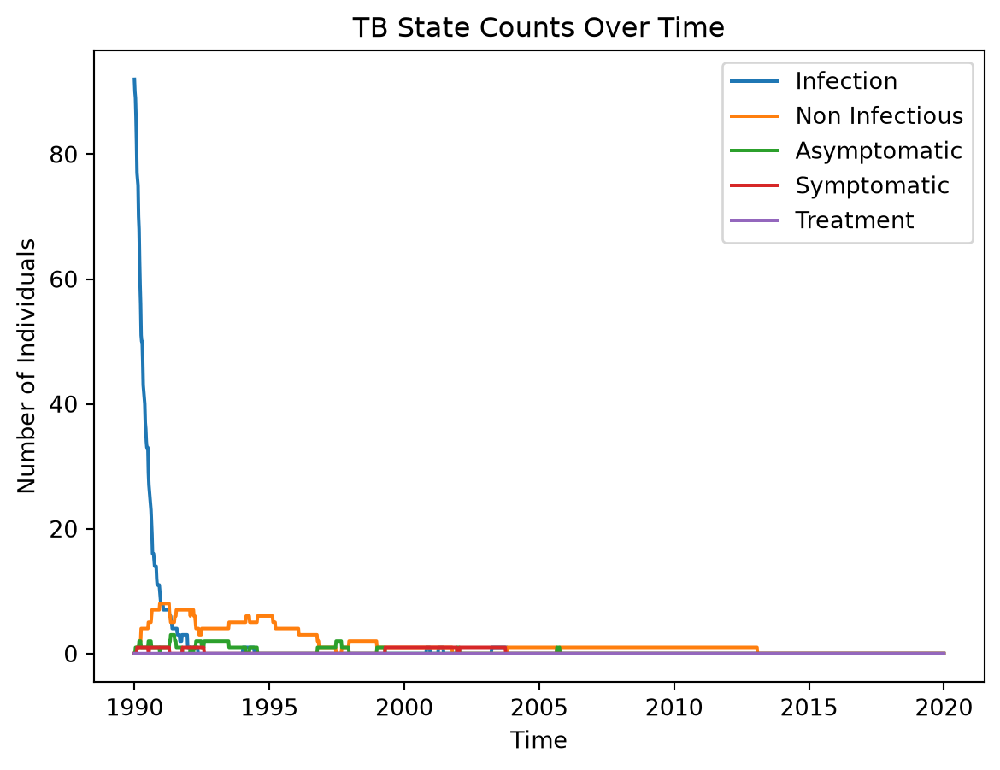

# Import necessary libraries
import tbsim
import starsim as ss
import matplotlib.pyplot as plt
import numpy as npHow to create a TB simulation
High level steps
Following Starsim’s Getting Started tutorial, we will proceed with the most common tasks for modeling infectious diseases, in our case, TB:
- Defining parameters (Building the simulation):
- Running a simulation
- Plotting results
This notebook demonstrates how to create and run simulations for tuberculosis (TB) using the tbsim and starsim libraries. The simulations will model the spread and impact of TB over time on a population.
Packages
The code in this section imports the starsim package, which provides the capabilities to create and run simulations. Note that while tbsim enables some functionality, the full capabilities are provided by starsim.
Building the simulation
In this case, in order to make our code reusable we will encapsulate all our preparation steps in the following function, make_tb. This function puts together all what is needed for a simulation to run and returns a simulation object with a tuberculosis disease, methods, etc., and with user specified parameters. NOTE: Default values are generally specified as part of the init method for each class, i.e. people, network, tb, etc.).
People:
- Creates a population of 1,000 agents using the People class from the starsim (aliased as ss) library.
TB Disease
- Defines the disease parameters for TB:
- beta: Transmission rate (default: 0.025 per year using ss.peryear()).
- init_prev: Initial prevalence of TB (default: 10% using ss.bernoulli()).
- Initializes the TB model with these parameters using the tbsim library.
- The TB class includes comprehensive disease progression with multiple states: latent (slow/fast), active (pre-symptomatic, smear positive/negative, extra-pulmonary), and treatment effects.
Network
- Defines the network parameters:
- n_contacts: Number of contacts per agent, following a Poisson distribution with a mean (lambda) of 5.
- dur: Duration of contact (0 means end after one timestep).
- Initializes a random network with these parameters.
Demographics
The demographics section sets up two demographic processes for the simulation: pregnancy and death rates. These, define and incorporate key demographic events into the simulation model:
- Pregnancy: Adds new agents to the population at a rate of 25 per 1,000 people. (TODO: Verify if this is done every time every step or if this is a one time event at set_prognoses)
- Deaths: Removes agents from the population at a rate of 10 per 1,000 people. (same question as above)
This setup ensures the simulation realistically accounts for population changes over time due to births and deaths.
Simulation Parameters and Initialization
This part of the code defines the parameters for the simulation and initializes it using these parameters:
- Defining Simulation Parameters:
dt = ss.days(7): This defines the time step (dt) for the simulation. Here,ss.days(7)represents a weekly time step, so the simulation progresses in weekly increments.start = ss.date(1990,1,1): This sets the starting date of the simulation to January 1, 1990.stop = ss.date(2020,1,1): This sets the ending date of the simulation to January 1, 2020.
- Initializing the Simulation:
tbsim.Sim: This is a convenience subclass ofstarsim’sss.Sim, used to create a simulation object (it adds TB-specific conveniences such assim.get_tb()).- Parameters:
people=pop: Specifies the population object created earlier.networks=net: Specifies the network object that describes how agents are connected.diseases=tb: Specifies the TB disease model initialized earlier.pars=sim_pars: Passes the simulation parameters defined above.demographics=dems: Specifies the list of demographic events (pregnancy and death rates).
- Setting Verbosity:
- This line adjusts how frequently the simulation prints its status updates.
sim.pars.verbose = 0: This sets the verbosity to 0, which means no status updates will be printed during the simulation run.
- Returning the Simulation Object:
- This returns the initialized simulation object so that it can be run or further interacted with outside of the
make_tbfunction.
- This returns the initialized simulation object so that it can be run or further interacted with outside of the
# Define the function to create a tuberculosis simulation
def make_tb():
# --------------- People ----------
initial_population_size = 1000
pop = ss.People(n_agents=initial_population_size)
# --------------- TB disease --------
# Using current default parameters from TB class
tb_pars = dict( # Disease parameters
beta = ss.peryear(0.025), # Updated to match current default
init_prev = ss.bernoulli(0.10), # 10% initial prevalence
)
tb = tbsim.TB(tb_pars) # Initialize
# --------------- Network ---------
net_pars = dict( # Network parameters
n_contacts=ss.poisson(lam=5),
dur = 0, # End after one timestep
)
net = ss.RandomNet(net_pars) # Initialize a random network
# --------------- Demographics --------
dems = [
ss.Pregnancy(pars=dict(fertility_rate=25)), # Per 1,000 people
ss.Deaths(pars=dict(death_rate=10)), # Per 1,000 people
]
# --------------- simulation -------
sim_pars= dict(
dt = ss.days(7),
start = ss.date(1990,1,1),
stop = ss.date(2020,1,1),
)
sim = tbsim.Sim(people=pop,
networks=net,
diseases=tb,
pars=sim_pars,
demographics=dems
) # initialize the simulation
sim.pars.verbose = 0 # Print status every 100 steps
return simRun the Simulation
We will now create and run the first simulation using the make_tb function with the parameters set above.
Please note, at some point it may be convenient to parameterize the make_tb function and make it even more re-usable (for intance for scenarios creation).
# Create and run the first simulation
sim = make_tb() # Create the simulation - running make_tb returns a tbsim.Sim (a subclass of ss.Sim from the starsim library), so we can use all the methods of the ss.Sim class as well as tbsim.Sim conveniences like sim.get_tb()
sim.run() # Run the simulation Sim(n=1000; 1990.01.01—2020.01.01; demographics=pregnancy, deaths; networks=randomnet; diseases=tb)Analyzing The Results
Let’s first review the data that was generated (and is available in the results array). This collected data is specified in the init_results() method and then updated in the update_results() method of the TB class. The results include:
- State counts: Number of individuals in each TB state (latent, active, infectious)
- Age-specific metrics: Separate tracking for individuals 15+ years old
- Incidence and mortality: New cases, deaths, and cumulative measures
- Epidemiological indicators: Prevalence, incidence rates, and detection metrics
For more detailed information, please refer to the official documentation at Starsim Results API.
tbr = sim.get_tb().results
print("This is a dictionary of the results that you can plot: \n",tbr.keys())This is a dictionary of the results that you can plot:
['timevec', 'n_susceptible', 'n_infected', 'n_on_treatment', 'n_ever_infected', 'prevalence', 'new_infections', 'cum_infections', 'n_SUSCEPTIBLE', 'n_SUSCEPTIBLE_15+', 'n_INFECTION', 'n_INFECTION_15+', 'n_CLEARED', 'n_CLEARED_15+', 'n_NON_INFECTIOUS', 'n_NON_INFECTIOUS_15+', 'n_ASYMPTOMATIC', 'n_ASYMPTOMATIC_15+', 'n_SYMPTOMATIC', 'n_SYMPTOMATIC_15+', 'n_TREATMENT', 'n_TREATMENT_15+', 'n_DEAD', 'n_DEAD_15+', 'n_REMOVED', 'n_REMOVED_15+', 'n_infectious', 'n_infectious_15+', 'new_active', 'new_active_15+', 'cum_active', 'cum_active_15+', 'new_deaths', 'new_deaths_15+', 'cum_deaths', 'cum_deaths_15+', 'prevalence_active', 'incidence_kpy', 'deaths_ppy', 'new_notifications_15+', 'n_detectable_15+']now, below we show the plotting of a single channel (result):
plt.plot(range(0,len(tbr['prevalence'])),tbr['prevalence'])
plt.title("The most basic plotting sample \n TB Prevalence \n (raw data)")
Plotting
Once you get familiar with the available data in the results array, you can proceed to plot your results using your favorite method.
###1: Using the starsim library
Plot the results of the simulation - inherited from the starsim library which is available under the diseases attribute of the simulation: sim.plot()
sim.plot()Figure(768x576)
Using TBSim plots:
The plot function from tbsim can be used to create comprehensive plots:
tbsim.plot({'single simulation': sim.results.flatten(), 'tb only results': sim.get_tb().results.flatten()})where each key represents a scenario that will be plotted with a different color.
For more information, see the plot function documentation.
# Create comprehensive plots using tbsim's plot function
tbsim.plot({'ALL SIM metrics': sim.results.flatten(),'TB ONLY metrics': sim.get_tb().results.flatten()}, n_cols=4, row_height=2 )

Using your own function
Take a look at the sample below, it will show you how to access the results dataframe (dict) and how with a simple function you can plot your simulation’s results.
# Method 3: Custom plotting using TB results directly
fig = plt.figure()
tb_results = sim.get_tb().results
for rkey in ['n_INFECTION', 'n_NON_INFECTIOUS', 'n_ASYMPTOMATIC', 'n_SYMPTOMATIC', 'n_TREATMENT']:
plt.plot(tb_results['timevec'], tb_results[rkey], label=rkey.replace('n_', '').replace('_', ' ').title())
plt.legend()
plt.title("TB State Counts Over Time")
plt.xlabel("Time")
plt.ylabel("Number of Individuals")
Additional Information
Current TB Model Features
The TB model in this notebook uses the latest implementation from the tbsim library, which includes:
Comprehensive Disease States: The model tracks multiple TB states including latent (slow/fast progression), active (pre-symptomatic, smear positive/negative, extra-pulmonary), and treatment effects.
Realistic Parameters: Default parameters are based on epidemiological literature and include:
- Transmission rate: 0.025 per year
- Initial prevalence: 10% of population (as used in this tutorial)
- State-specific progression rates and mortality
- Treatment effects on transmission and mortality
Age-Specific Tracking: Separate metrics for individuals 15+ years old, important for TB epidemiology.
Treatment Integration: The model includes treatment effects that reduce transmission and prevent mortality.
Time-varying (front-loaded) progression
By default the hazards of progressing from latent INFECTION to active TB are constant per year. Real household-contact data are instead front-loaded: most people who ever progress do so within about a year of infection. You can reproduce this by letting the INFECTION → ASYMPTOMATIC hazard decline exponentially with time since infection, inf_asy(τ) = inf_asy · exp(−k_asy · τ), where τ is the number of years since the agent was infected (reinfection restarts the clock). This is controlled by a single new parameter, k_asy (per year); the analogous k_non does the same for INFECTION → NON_INFECTIOUS. Both default to 0, which is exactly the constant-hazard model, so existing calibrations and results are unchanged.
# Front-load progression to active TB (larger k_asy concentrates progression in year 1);
# k_asy = 0 (the default) recovers the original constant-rate behaviour.
tb = tbsim.TB(k_asy=6.0)Reinfection of latent agents
Latent (INFECTION) and non-infectious (NON_INFECTIOUS) agents can be reinfected: a re-exposure resets the agent’s ti_infected clock (raising the progression hazard under front-loading) without otherwise changing its state. The relative susceptibility to reinfection in these states is set by rr_reinfection_inf (σ_L, defaults to rr_reinfection_rec) and rr_reinfection_non (σ_N, defaults to rr_reinfection_inf). Setting them to 0 closes reinfection of already-infected agents.
# Latent agents reinfect at the recovered-agent RR by default; set to 0 to disable.
tb = tbsim.TB(rr_reinfection_inf=0.21, rr_reinfection_non=0.21)Next Steps
To extend this simulation, you can: 1. Add interventions (diagnostics, treatment programs, vaccination) 2. Include comorbidities (HIV, malnutrition) 3. Modify network structures (household networks, spatial networks) 4. Run scenario analyses with different parameter sets 5. Use the comprehensive analyzers for detailed epidemiological analysis
For more advanced examples, see the other tutorials in this documentation.